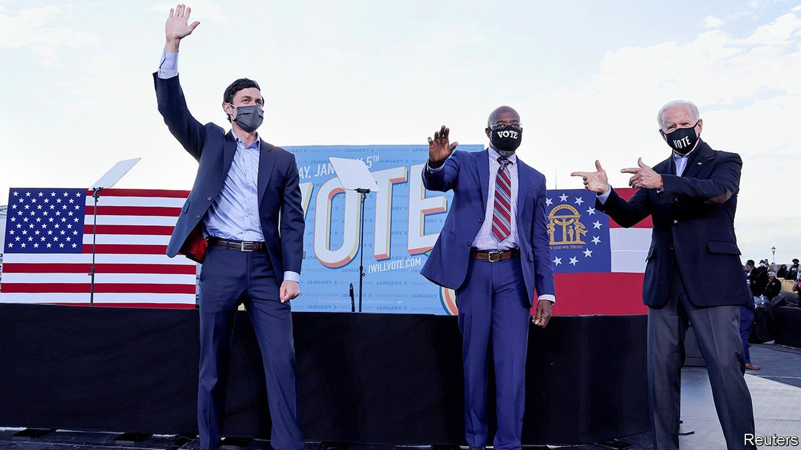
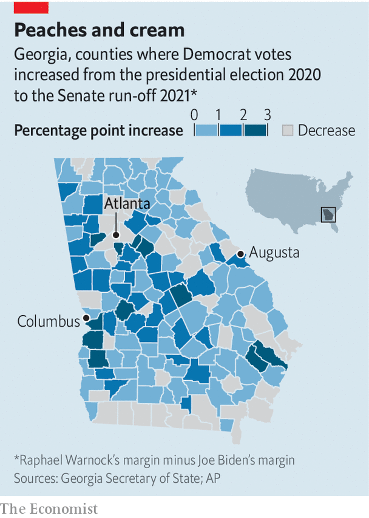

Two stunning victories for Democrats in Georgia upend the Senate
Joe Biden will now have a majority in both houses to work with

FOUR YEARS ago, any pundit predicting that the solidly Republican state of Georgia would send two Democratic senators to Washington in 2020 would have been dismissed as a crank. Yet that was the outcome of two extraordinary run-off elections held on January 5th, which may set a new model for winning Democratic campaigns in the usually inhospitable South. The contests were also the costliest Senate races ever—more than $500m was spent on a deluge of advertising alone—because they will determine control of the Senate for the next two years.
Listen to this story.Enjoy more audio and podcasts on iOS or Android.
Listen to this story
Save time by listening to our audio articles as you multitask
Raphael Warnock, the first African-American Democrat ever to be elected to the Senate from the South, defeated Kelly Loeffler, the Republican incumbent. The other Democrat, Jon Ossoff, defeated Senator David Perdue, meaning the Senate will be tied at 50-50, giving the vice-president-elect, Kamala Harris, the casting vote in the upper chamber. Democrats will thus have secured the Washington trifecta of House, Senate and White House needed to pass legislation. For the incoming president, Joe Biden, this means a chance to convert at least some of his ambitious agenda from a pile of white papers into reality. For the outgoing president, Donald Trump, it is a startling rebuke.
Though the elections’ national ramifications may take most headlines, the contests also reflect Georgia’s idiosyncrasies. The state is unique in requiring a head-to-head run-off if no candidate commands a majority in the general election. On November 3rd Mr Perdue secured a greater share of votes than did Mr Trump, who lost the state by a razor-thin margin. The president has since been consumed with attempts to overturn that result through recounts, lawsuits and, most disturbingly, direct pressure on Georgia’s top elections officer to “find” the necessary votes to steal the election.
Run-offs typically favour Republicans: they tend to be snoozy events that attract only the most committed voters (older, whiter and typically more conservative). That did not happen this time. Turnout was estimated to be 4.5m, or 89% of the record-setting tally in November. It was high enough in the right places to suggest a Democratic finish ahead of Mr Biden’s.

Despite its long spell in Republican hands, Georgia has become more competitive because of two demographic trends—a substantial increase in registered non-white voters, who tend to be reliable Democrats if they can be convinced to turn up to the polls, and a shift among educated, suburban whites away from the Republican Party. Both have been driven, among other things, by the economic growth in and around Atlanta.
During the presidential election, Mr Biden’s narrow victory was probably based more on a white revolt in the suburbs than on a dramatic surge in the black vote. Despite large increases in registration of black voters, after years of effort by grassroots groups, the black share of the electorate actually dropped between 2016 and 2020. Without defections among whites in Atlanta’s suburbs, Mr Biden might not have won Georgia’s 16 electoral-college votes. The story of the run-off, in contrast, seems to have been higher turnout among black voters, who made up a larger share of the early vote, and mostly voted Democrat.
Nse Ufot, the CEO of the New Georgia Project, which seeks to increase turnout among young and non-white voters, credits an organising feat that was years in the making. The group says it has knocked on 2m doors, dispatched 3m text messages and dialled phones 5m times. Ms Ufot notes that there were 120,000 early voters who skipped the presidential election altogether. It may also have helped that neither of the two Democrats was the party’s standard Southern candidate: a milquetoast, carefully calibrated, mildly conservative fellow in soft-bellied middle-age. Mr Warnock is a pastor who preaches in the same church that Martin Luther King Jr once did. Mr Ossoff is a 33-year-old Jewish documentary film-maker. Neither has a genteel twang: Mr Warnock’s cadences are those of a practised sermoniser; Mr Ossoff’s those of a Barack Obama impersonator.
Whether the disappointment of the run-offs will prompt a wider Republican break from Mr Trump is unclear. Many thought that defeat in November would break his ironclad hold over the party. Not at all. Both of the incumbent Republican senators in the run-off called for the resignation of the Republican secretary of state who oversees the election for failing to endorse Mr Trump’s view of the world (which is that it is impossible for him to lose an election without unspecified masses of fraud occurring). They also expressed support for Republicans refusing to certify the results of the presidential election.
Mr Trump’s antics left both Republican senators in an impossible position—reliant on the flailing, departing president for his devoted voters, and unwilling and unable to cross him even as he descended into dark, anti-democratic fantasies. This tied Republican voters, most of whom say they believe the president’s theories about voter fraud, in chains of illogic. Why turn out to vote in a state that Mr Trump says was hopelessly crippled by fraud just two months ago? If the state’s Republican governor and secretary of state could not be trusted to safeguard the last election, why bother with this one? Why was the battle cry of the Republicans’ Senate run-off campaign to keep socialism at bay if Mr Trump (not Mr Biden) was to be president? Whether Mr Trump so demotivated Republican voters as to have sabotaged an expected victory for his party is hard to know in a race that is so close.
For Mr Biden, however, the prize is immense. “Georgia, the whole nation is looking at you,” he told a drive-in rally in Atlanta on the eve of the poll. “One state can chart the course not just for the next four years, but for the next generation,” he went on. With the Senate in effect under Democratic control, Mr Biden will have a much easier and speedier time in getting his nominations for the cabinet and federal courts confirmed. He will not have the filibuster-proof majority required to pass the sort of agenda that he campaigned on. But the Senate will pick up legislation passed by the Democratically-controlled House. Conservative Democratic senators like Joe Manchin of West Virginia and Kyrsten Sinema of Arizona will wield disproportionate power. But to the new White House they will be much more welcome negotiating partners than Mr McConnell. The stakes in Georgia were always much larger than one state.■
Correction (January 7th 2020): A previous version of this article referred to Raphael Warnock as the first African-American to be elected to the Senate from the South.